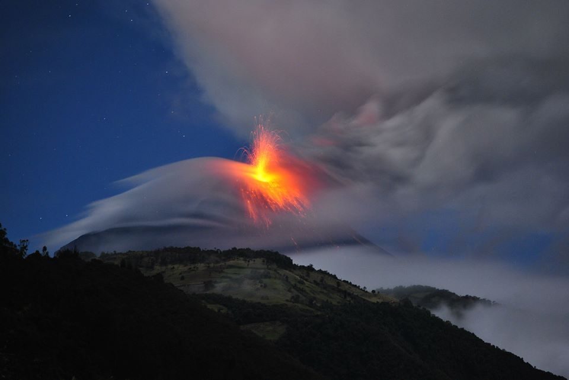
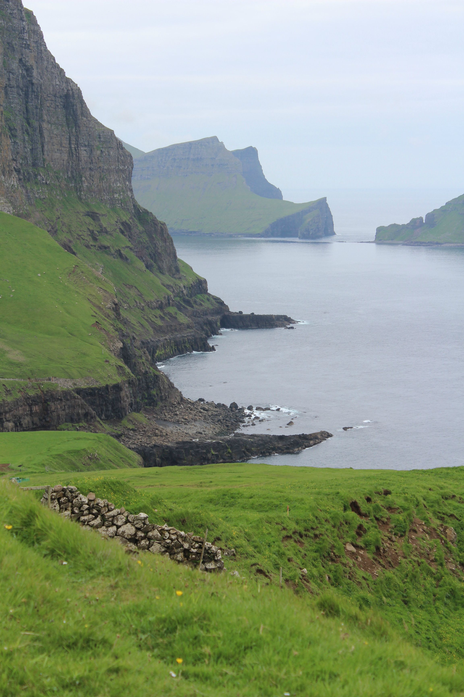
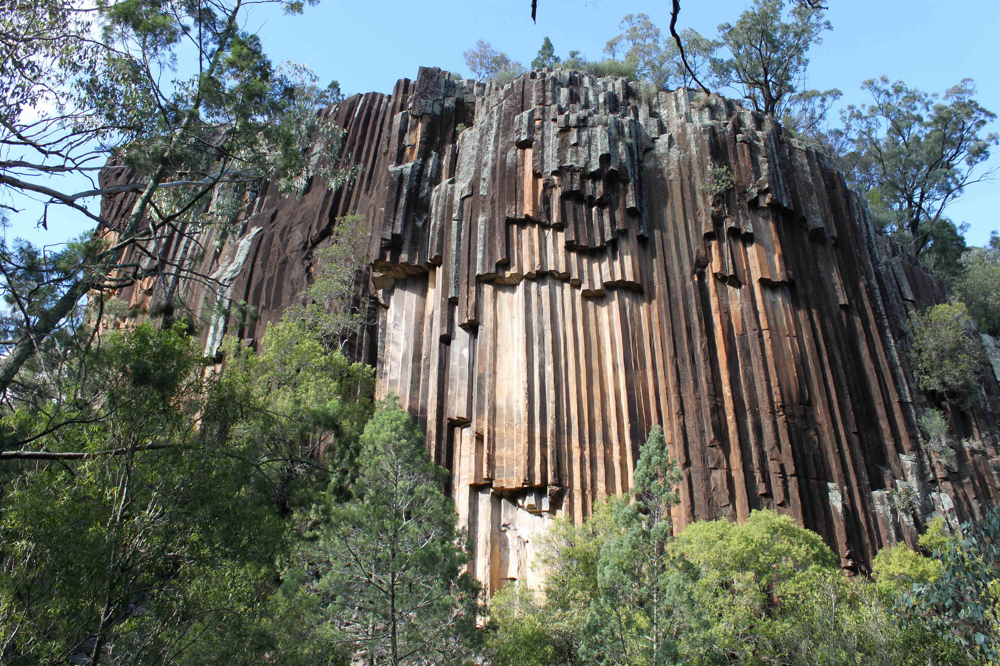
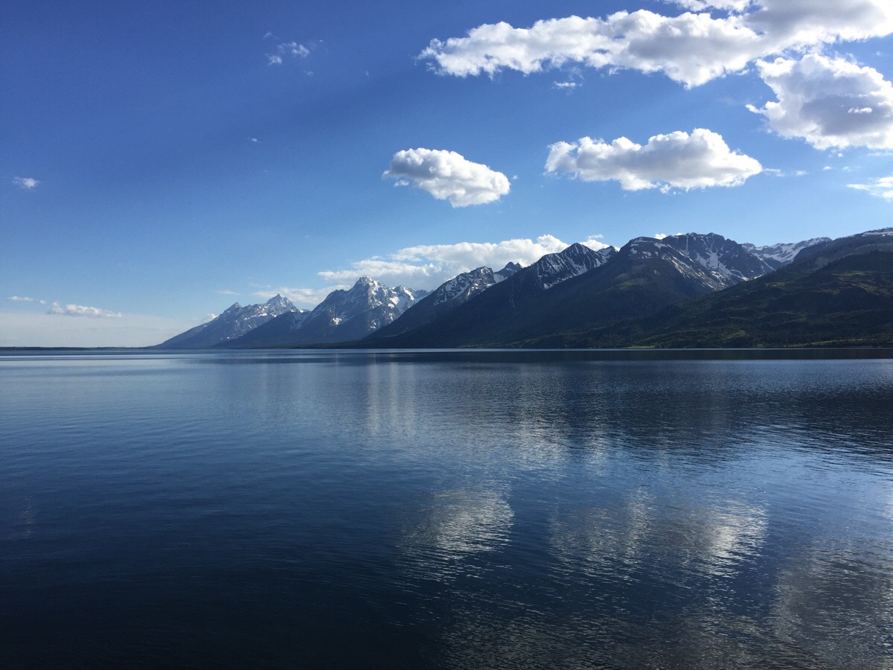
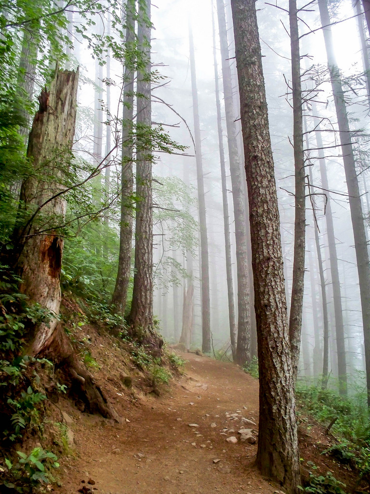
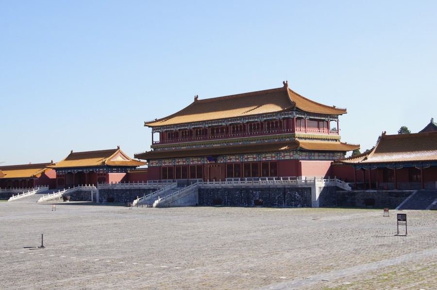
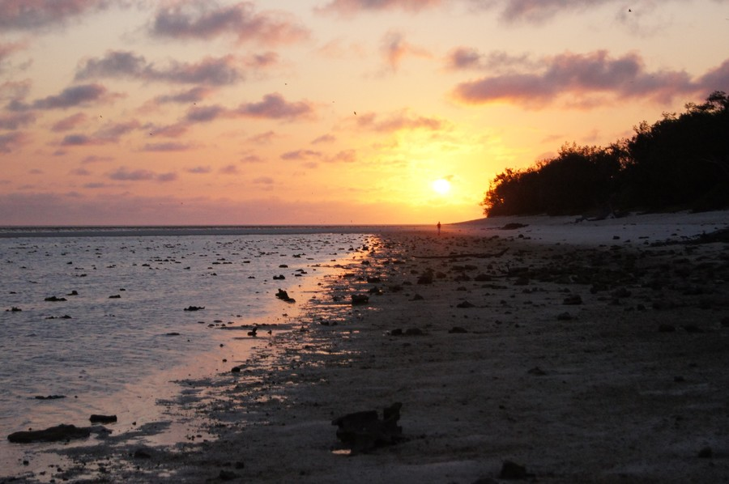

Fig1. - A view of the pulpit rock in Norway.

Fig2. - A view of the pulpit rock in Afghanistan.

Fig3. - A view of the pulpit rock in Albania.Fig4. - A view of the pulpit rock in Algeria.

Fig5. - A view of the pulpit rock in Andorra.

Fig6. - A view of the pulpit rock in Angola.Fig7. - A view of the pulpit rock in Antigua.Fig8. - A view of the pulpit rock in Armenia.

Fig9. - A view of the pulpit rock in Aruba.Fig10. - A view of the pulpit rock in Australia.

Fig11. - A view of the pulpit rock in Norway.